Projecten
Gameplay
KlimKlim 3D
KlimKilm 3D is het spel dat ik heb gemaakt met een paar teamgenoten voor mijn master project. Je klimt een wand terwijl je onderweg naar de top nieuwe obstakels tegemoet komt zoals vogels en plekken waar je moet nadenken over in wat voor volgorde ledenmaten op de wand moeten worden geplaatst.
Mijn persoonlijke contributie aan dit spel is het movement systeem van de speler. Dat de handen de muis volgen, dat deze op de wand geplaatst worden als de spelen een muis knop indrukt, dat het torso meebeweegt, de voeten die zelf bepalen waar ze geplaatst worden en dat de speler valt als die zich niet vast houd aan de muur.
Gnome onslaught
Dit spel heb ik gemaakt voor een school project met de Unity game engine. Het centrale thema van de opdracht draaide om reusable components maken met het SOLID principe. Hier bij is het de bedoeling dat je korte scripts/componenten voor gameobjects schrijft die verantwoordelijk zijn voor één feature. en die op een manier programeren zodat ze modulair toe te passen zijn en veel hergebruiken kunnen worden voor allerlei mechanics in het spel.
Dit heb ik gedaan door in deze actie-RTS allerlei diverse units met unieke abilities te maken, bijvoorbeeld een hond die niet stil kan staan, een bulldozer die het dicht gegroeide bos plat kan walsen en een explosieve val die kabouters tot zich aan trekt.
Bij de code sample hier naast zie je een van de componenten die ik geschreven heb voor dit project. Dit component zorgt er voor dat een unit op zoek gaat naar een enemy en als die er een vind dat die enemy door de unit waar dit script op staat word word aangevallen.
Gnome onslaught is een 2D actie-RTS waarbij je als druïde kabouters commandeert en met ze tegen de kwaade houthakkers en hun cruele maschine's vecht. Kan jij ze verdrijven en er voor zorgen dat het bos in tact blijft?
Speel in browser! Download voor windows! Check al mijn code!Gameplay

Gnome in editor
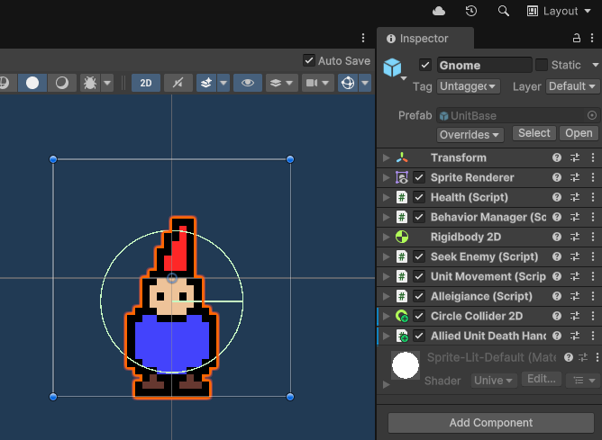
DiverseUnits
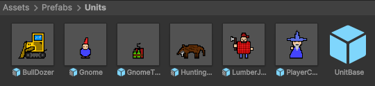
Code sample
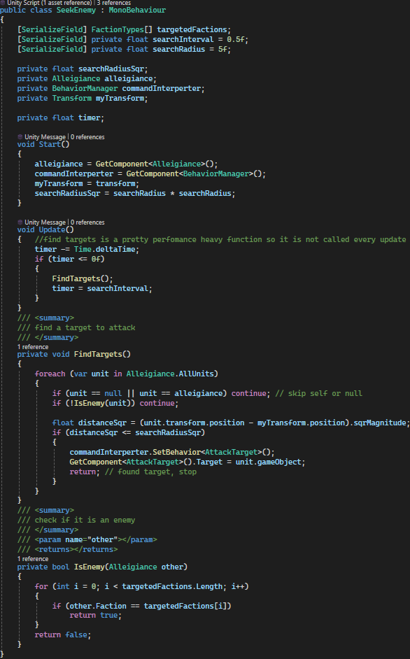
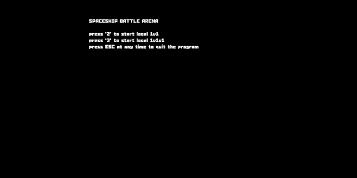
spacegame
Bij dit project heb ik een simpele local pvp spel gemaakt waar in je tegen andere spelers strijd in een ruimteschip op een 2d veld.
Op het oppervlak ziet het er niet heel bijzonder uit. Maar dit spel is gemaakt met de MonoGame engine en C#. Het bijzondere aan MonoGame is dat in verhouding met traditionele grote naam game engines het heel weinig voor je doet. Bijvoorbeeld bij Unity heb je dingen zoals physics, collision, gameobjects, etc al ingebouwd. Deze dingen heb ik dus allemaal zelf er in moeten programmeren. Je kan dit project gebruiken als meet lat voor mijn vaardigheid in C# en logica.
Voel je vrij om mijn code te bekijken op github via de link hier onder
Volledig project op githubProject microgame
Dit project heb ik gemaakt tijdens mijn studie software development met een team van 6. dit project is gemaakt met de unity game engine, c# en assets met blender.
In dit spel speel je als een hamster in een bal waar mee je zo ver mogelijk door een level probeert te navigeren voor een zo hoog mogelijke score.
Mijn grootste bijdrage en het meest uitdagende deel voor mij met dit project is de technische backend van de level generatie. Die er voor zorgt dat prefabs op de juiste plaats met een graad aan variatie voor de speler word geplaatst en achter de speler buiten zicht word weggehaald. Naast het spel hebben we ook een promotie video gemaakt met een paar mensen van het team, hier voor heb ik de voice-over gedaan.
Voor het process en team organisatie hebben we agile gebruik waar bij we met een scrum master in sprints werken. Met deze sprint heb je regelmatig geplande overleggen retrospectives en feedback rondes. Een scrum master is een soort organisator voor de groep en communiceert met de leeraar of persoon hoger in de bedrijfs hirachie.
Als je mijn technische vaardigheid wil peilen op het gebied van programmeren toen ik dit project heb gemaakt kan de de level generation script bekijken via de link hier onder.
LevelGenerator op githubVolledig project op github
mijn voice over bij de promotie video
(niet daadwerkelijk beschikbaar op de appstore)
hoofd menu spel
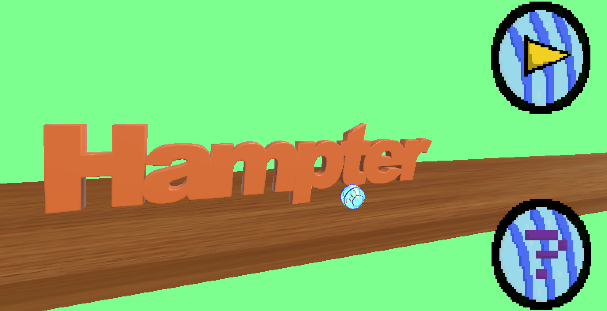
level met hamster bal in de unity editor
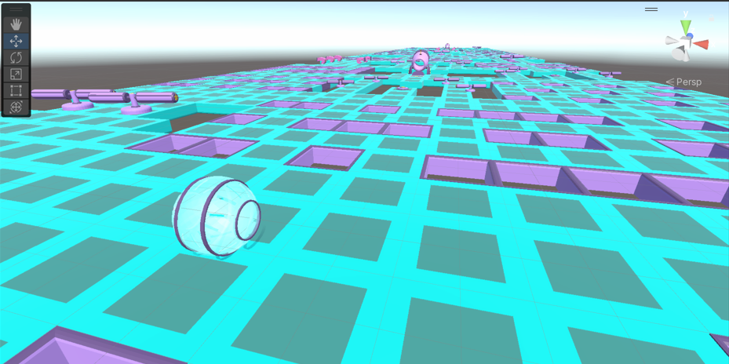
gameplay

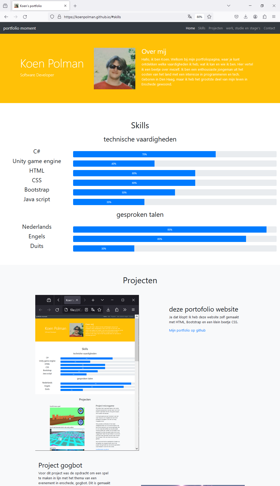
deze portofolio website
Ja dat klopt! Ik heb deze website zelf gemaakt met HTML, Bootstrap en een klein beetje CSS.
Mijn portfolio op githubProject gogbot
Voor dit project was de opdracht om een spel te maken in lijn met het thema van een evenement in enschede, gogbot. Dit is gemaakt met het thema van 2023 "drugs & ai". We hebben een wereld maakt waar in je rond kan lopen, er robot mannentjes in rond lopen en op je af komen. Deze robot mannenjes kan je afweren met een wapen. Wat ik zelf voor het grootste deel heb gecontrubiteerd bij dit project was organisatie en onderzoek. Denk aan dingen zoals doelgroep onderzoek, feedback, retrospectives en meer.
Voor het process en team organisatie hebben we agile gebruik waar bij we met een scrum master in sprints werken. Met deze sprint heb je regelmatig geplande overleggen retrospectives en feedback rondes. Bij dit project was ik een scrum master, dit is een soort organisator voor de groep en communiceert met de leeraar of persoon hoger in de bedrijfs hirachie.
Volledig project op github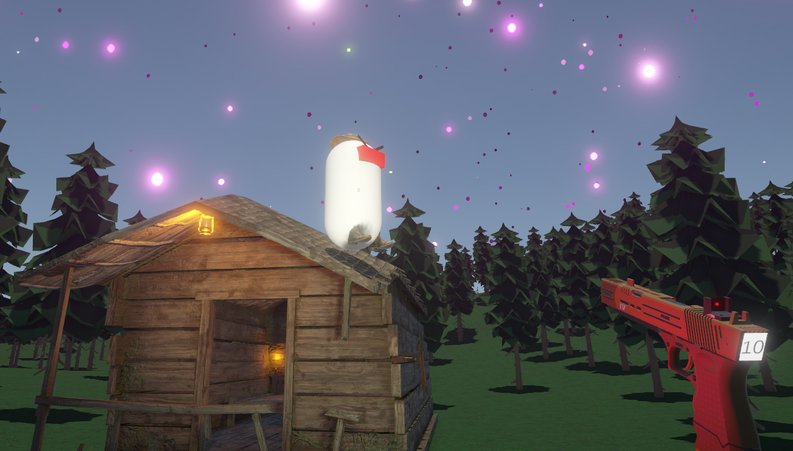
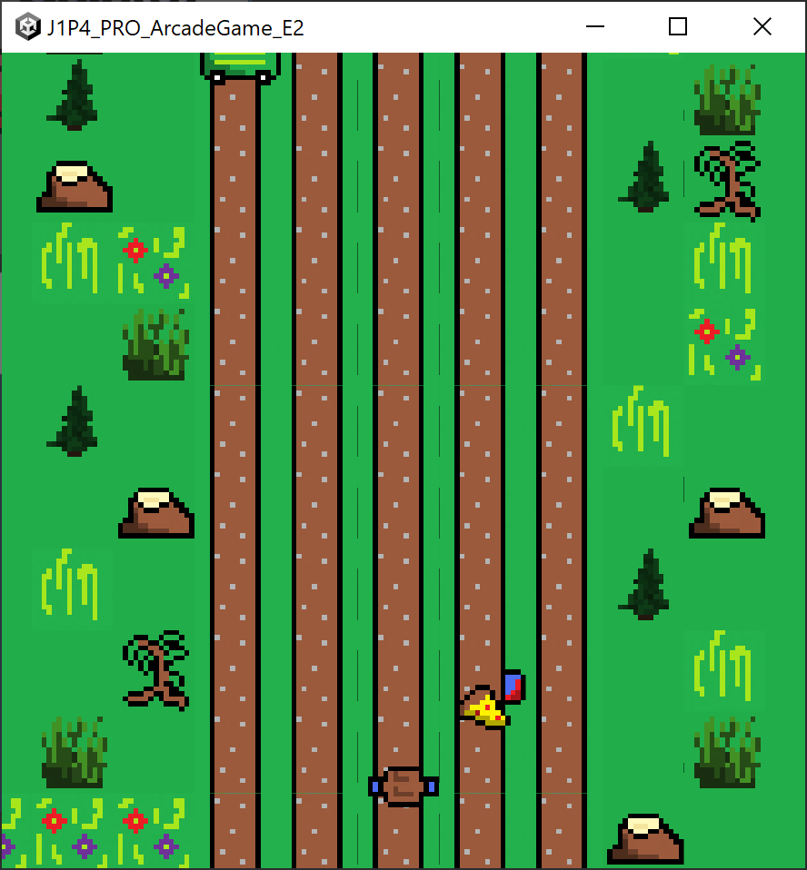
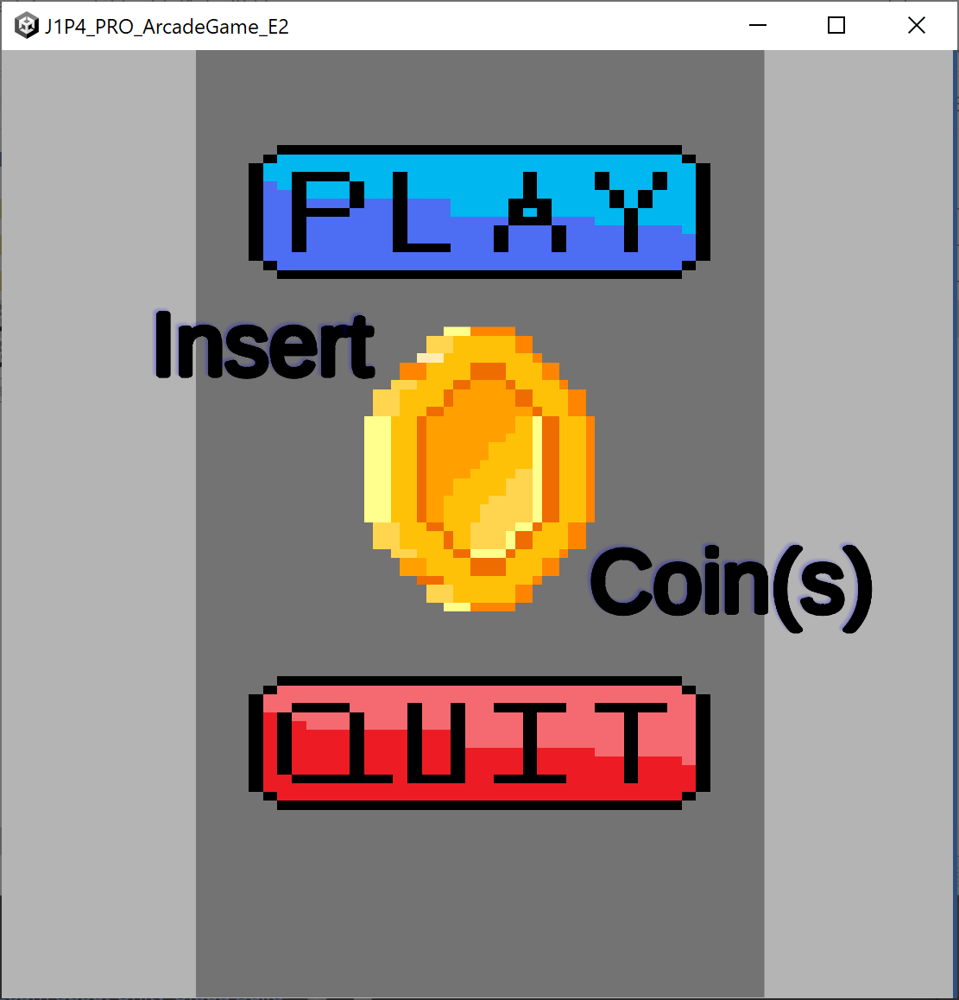
Project arcadegame
Dit project is gemaakt in een groep van 4 man voor een school opdracht waarbij we een arcade game moesten maken met de unity game engine en c#. Wat wij hier hebben gemaakt is een eindloze runner waar bij over de loop van de speeltijd er meer en meer obstakel op je pad komen die je moet vermijden om een game ove te voorkomen. We hebben hier voor zelf sprites gemaakt, er voor gezorgd dat er een highscore word opgeslagen, dat het level theoretisch oneindig lang door gespeeld kan worden en dat in dat level er obstakels worden geplaatst om te vermijden. Mijn grootste contributie bij dit spel is het oneindige level en de obstakels.
Volledig project op githubProject textadventure
Dit is mijn eerste programmeer project hier heb ik individueel een text adventure gemaakt met alleen de programmeer taal c#. In deze text adventure dwaal je door een kerker heen met interresante mensen, dingen en vecht je uit eindelijk met een eind baas. Een variatie aan programmeer technieken zijn hierbij toegepast methods die inhoud toevoegen of verwijderen aan de console, allerlei soorten variabelen, arrays, multidimensionale arrays, lists, if statements samen met else en if else, switches, methods en OOP.
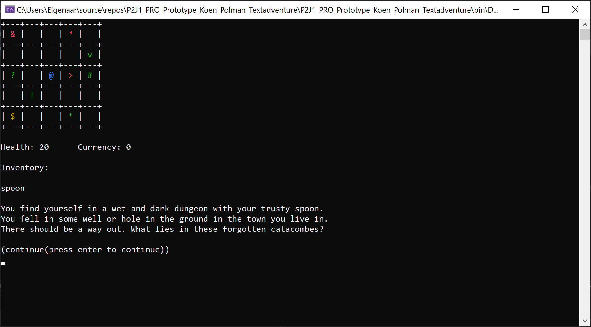